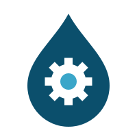
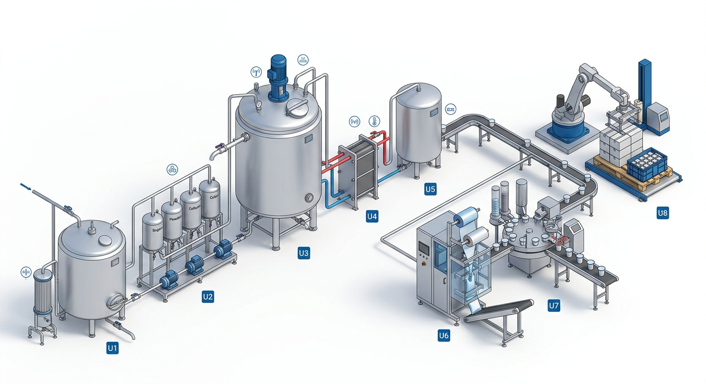

David Cortés
Gerente de proyecto y de producto
Ingeniería · Automatización · Impacto
Diseñamos soluciones de transformación digital que conectan personas, datos y procesos para que tu operación avance con claridad.
Conoce nuestra propuesta
TRANSFORMACIÓNEl equipo detrás del cambio
Un equipo multidisciplinario que convierte preguntas difíciles en decisiones accionables.
Gerente de proyecto y de producto
Líder de simulación y mejora
Líder de arquitectura digital

Líder de procesos e instrumentación

Líder de gestión de producción
Líder financiero y comercial
Diagnóstico y necesidades del cliente
Transformación Digital Industrial para Productos Alimenticios La Hacienda
Procesos que no han evolucionado y que consumen más tiempo del que deberían.
Dificultad para alternar eficientemente entre sabores y presentaciones distintas.
Paradas frecuentes en distintas etapas por desajustes en las máquinas.
Controles manuales de pesaje y acidez que consumen tiempo improductivo, sin integración digital entre planta (OT) y gestión (IT).
Alcance de la solución
Gestión de Recetas: Flexibilidad para programar lotes de 3 sabores y 3 formatos de envase.
Control Automático: Monitoreo continuo de pH, temperatura y pesaje dinámico con rechazo automático en línea.
Reducción de Downtime: Supervisión SCADA para detección temprana de fallas en empaque.
Integración OT/IT: Flujo continuo de datos hacia sistemas MES y ERP para trazabilidad total.
La transformación propuesta
Arquitectura integral basada en los estándares ANSI/ISA-88 e ISA-95 para la planta La Hacienda
Diseñamos una solución de ingeniería que automatiza y digitaliza la producción por lotes de yogur para 3 referencias comerciales. La arquitectura integra control de proceso en tiempo real, envasado flexible, robótica industrial y supervisión SCADA conectada a capas MES/ERP. La línea pasa de uno a dos lotes diarios de 550 L de leche con 26 equipos (9 existentes y 17 nuevos), 23 sensores y 19 actuadores, y el proyecto se ejecuta en 24 semanas con una inversión de COP 1.655,6 millones.
Modelo físico 3D y distribución de unidades (ISA-88)

Identificación de unidades
Matriz de pilares tecnológicos
Control por lotes estructurado que automatiza la dosificación de ingredientes, formulaciones, temperaturas y adición de preparados de fruta.
Control regulatorio PID en el PLC: rango dividido de vapor y agua en el tanque, prealimentación en el enfriador y control de relación de la fruta, con pH en línea para terminar la incubación. Sin control avanzado: cada lazo tiene un actuador dominante y dinámicas lentas.
Enrutamiento automatizado hacia la línea de bolsas o llenadora de vasos según la receta de control del lote en ejecución.
Pesaje en línea dinámico con sistema neumático de rechazo automático para garantizar productos en tolerancia de peso/volumen.
Robot industrial para encanastado, encajonado y paletizado automático, adaptable a la geometría de bolsas y vasos.
Campo en 4–20 mA, IO-Link y 24 V DC; control en EtherNet/IP con anillo DLR; OPC UA del PLC hacia el SCADA Ignition y el MES; servicios web hacia el ERP. Trazabilidad del lote de la cantina a la estiba.
Impacto y beneficios esperados
Propuesta de valor
Cada beneficio se mide con datos que hoy no existen y que el MES entrega todos los días.
De 763 a 1.321 unidades por operario al día. La producción pasa de 3.052 bolsas a 6.604 unidades diarias en tres referencias.
Mano de obra de 147 a 85 COP por unidad, y costo real de leche, insumos y envase por lote.
Producto no conforme, con peso del 100 % y puntos críticos con registro continuo. Unos COP 62 millones al año que dejan de perderse.
Para reconstruir la genealogía de un lote. Un retiro de producto se limita a los lotes afectados.
Tablero con OEE, rendimiento, no conformes, consumos, paradas y alarmas, en lugar de registros en papel.
Qué referencia producir según su margen, cuánta leche comprar según el plan y cuándo intervenir un equipo según sus horas.
Estrategia de control
El PLC ejecuta el control secuencial por fases de ISA-88 y lazos PID con mejoras clásicas. El control avanzado (MPC, difuso o adaptativo) no se justifica: cada lazo tiene un actuador dominante, las dinámicas son lentas y el proceso es por lotes. El personal de la planta puede mantener un PID; un MPC exigiría un modelo identificado y un especialista.
Personas y gestión del cambio
El proyecto instala la tecnología en 24 semanas; la mejora continua con los datos sigue después.
Lanzamiento con los dueños y los operarios: por qué cambia la línea.
Agentes de cambio y participación en la validación de recetas y pantallas.
Capacitación por rol en aula y en el gemelo digital, sin riesgo para el producto.
Práctica guiada en el arranque y certificación antes de operar solo.
Reunión diaria con el tablero, 8 semanas de acompañamiento y revisión trimestral.
Instrumentar la línea, registrar cada lote y poner en marcha el MES.
Cumplir las metas de no conformes y OEE con la reunión diaria y la semanal.
Control estadístico del pH y del peso, mantenimiento por condición y costo por referencia.
Pago de la leche por calidad y planeación con los distribuidores según la demanda real.
Plan de implementación
Del 18 de enero al 2 de julio de 2027, con 4.760 horas de ingeniería y nadie del equipo por encima del 80 % de su capacidad.